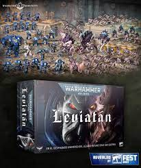

CAJA INICIAL
La Caja de iniciación de Warhammer el Juego de rol de fantasía contiene todo lo que necesitas para empezar una campaña épica: 6 personajes generados, 3 Hojas de referencia de las reglas, 3 hojas de Ayudas de juego, 2 dados personalizados de Q Workshop, 49 fichas de ventaja, 4 mapas muy detallados, la guía de Ubersreik.

LEVIATAN VIENE
- caja leviatan
La Tercera Guerra Tiránida fue la mayor invasión Tiránida de la galaxia, protagonizada por la Flota Enjambre Leviathan. Iniciada en el 997.M41, se diferenció de las anteriores en que en lugar de asaltar la Franja Este, se deslizó sin ser detectada por debajo del plano galáctico y atacó a la vez los Segmentums Ultima, Tempestus y Solar.

-
- Elemto a
- Elemto b
- Elemto c
- Elemto d
- Elemto e
- Elemto f